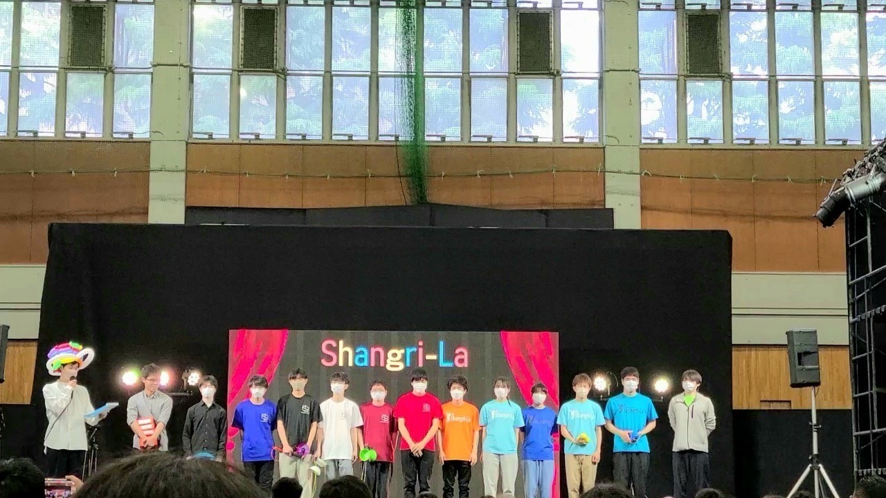
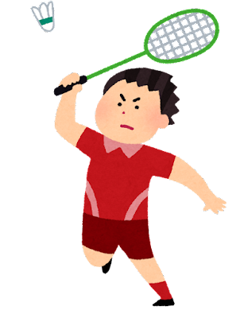

~自己紹介編~
自己紹介文

名前: 江利川 直葵(エリカワ ナオキ)
性別: 男
出身地: 埼玉県 富士見市
趣味: 漫画を読むこと, バドミントン
サークル：
S
h
a
n
g
r
i
-
L
a
ひとこと

情報工学科の江利川直葵です。気軽に”えり”と呼んでください。
プログラミングは初心者ですが頑張っていきたいです。
スポーツ全般なんでも好きで、 特にバドミントンが好きです。
サークルは「Shangri-La」に所属しています。このサークルは、
パフォーマンスサークルです。具体的にはジャグリングやマジック、
バルーンアートなどを扱っており、大宮祭、芝浦祭などのイベント
を盛り上げる活動をしています。みなさま仲良くなりましょう！
リンク
目次